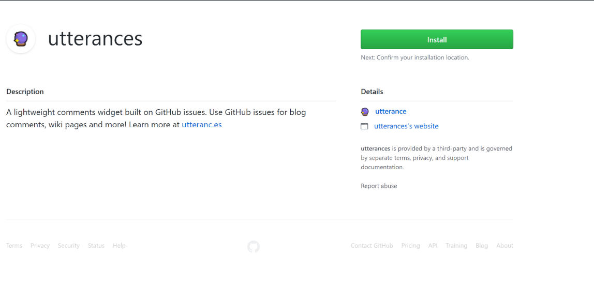

Utteranc.es is a lightweigth comments widget, which allows you to use Github Issues for blog comments. It’s open source, looks clean, comments are stored on Github, and even comes with a dark theme. Sure, you need to sign with Github, but that’s fine since most coders already have an account.
Installation steps
- You will, obviously, need to have your website hosted on GitHub, in a public repository, in order to utterances to work as intended.
Install utterances app on that repo. You have a choice to install the app on every (current and future) repo, but I don’t think you will have any need for this. Usually you will have a (public) repo with a name like <username>.github.io: select this from the drop-down menu that will appear:

Go to utterances web-app and fill the form as requested. It will generate (at the bottom of the page) a custom
htmlthat you could copy&paste in your blog template. you will require just a couple of information:- name of the repository : usually, it will be something like
- label: as the comments will be managed via GitHub Issue system, you will need to set-up a proper label to indentify those issues created by utterances (in case you have other normal issues as well in you repo)
- theme: your choice of a light or dark theme, according to the overall style of your current blog template
- name of the repository : usually, it will be something like
Copy to your clipboard.
[The following will apply only to Hugo Academic template, but it you are a little bit tech-savy you will find a way to make it work with whatever template you are using, even a custom one] Go to the folder in which the Hugo surce of your blog is hosted, and navigate to themes/academic/layouts/partials
Open the source file comments.html and replace everything in it with utterances script code:
<script src="https://utteranc.es/client.js" repo="mscipio/mscipio.github.io" issue-term="pathname" label="Comment" theme="github-light" crossorigin="anonymous" async> </script>That’s it! Now, check that everything is set-up correctly in the post template file, which can be found at themes/academic/layouts/_defaults/single.html. Towards the end you should find something similar to this:
<div class="article-container"></div> {{ partial "comments.html" . }} </div>Just in case you wanted to activate comments also for the Publications section provided by the Academic template, just copy the code snippet above and past it in themes/academic/layouts/publications/single.html, towards the end, just before the
<div class="container">tag.Save and deploy, as you normally would.
Voila! Check it out below! 👇